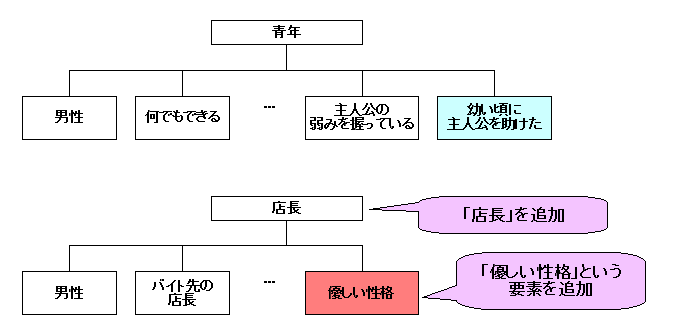

| どんでん返しの作り方 | |
| 中村あやえもん | |
| Ayaemo kenkyusyo (2014) | |
どんでん返しの作り方
中村あやえもん
Copyright © 2011, 2014 Ayaemo Research Institute. All rights reserved. Including the right to reproduce this book or portions thereof, in any form. No part of this text may be reproduced in any form without the express written permission of the author.
Version 2014.2.17
はじめに
本書はシナリオライターや小説家、脚本家を対象として、「読み手の欺き方」について、そのメカニズムと作成方法を説明しています。
「読み手の予想を覆すような結末（どんでん返し）を作りたい」「読み手をだまして驚かせたい」「読み手に先を予想させないようにしたい」といった方に、その作り方を説明しています。
以下のような内容を学ぶことができます。
- どのようにしたら、精密な「どんでん返し」を簡単に作れるのか。
- どのようにしたら、読み手をだますことができるのか。
- どのようにしたら、読み手の予想を覆せるのか。
- どのようにしたら、読み手に先を読ませないようにできるのか。
- どのようにしたら、効果的な伏線を張り、読み手を驚かせることができるのか。
- どのようにしたら、作者の与える情報を確実に読み手に信じ込ませることができるのか。
本書の方法論を使うことで、一つの作品があったとすると、一時間もかからずに一つの「どんでん返し」を追加することができるようになるでしょう。
貴方の作品に変化を加える一つの技術として、本書をお役立て下さい。
「読み手を欺く」とはどういうことなのか
「読み手を欺く」という技術は、野球で言うと「変化球の一種」に当たるでしょう。
シナリオライターはピッチャーとします。読み手がバッターです。バッターを上手く抑えれば、ピッチャーの勝ちとしましょう。
ピッチャーの基本はやはり、威力の高いストレートをどれだけ高められるかにあるものです。そのために基礎体力や投球技術を学ぶことが大切です。
ですが、ある一定以上のレベルになると、ストレートだけでは通用しなくなってきます。もちろん「ストレートを極めることで他を寄せ付けない」という道もありますが、ほとんどのピッチャーはストレートと変化球を交えてピッチングを組み立てます。
そして、「決め球」を持っているピッチャーは強いものです。「ストレート主体でカウントを取り、決め球の変化球で相手を打ち取る」といった自分だけのスタイルを作り出すことができます。バッターはストレートに目が慣れているために、変化球にまんまとやられて、「参った。やっぱあんたすげぇや」となるわけです。
シナリオライティングも、野球と同じです。
ストレートを極めることは重要ではありますが、ある一定以上のレベルになると、変化球や決め球を持たないピッチャーはワンパターンな配球になるため、「またこの配球か」と、読み手に簡単に予想されて打ち込まれてしまいます。これはつまり、読み手を退屈させてしまい、新鮮味を与えられずに「その作者の作品を手に取らなくなる」と言えるでしょう。それは作者にとって、敗北を意味するのです。
しかし、いくつかの変化球を持っていたり、決め球を持っていると、全く状況は変わります。
投球に幅が生まれ、変化を起こし、読み手と常にいい状態で向き合うことができます。変化球を持っていさえすれば、「全てストレート勝負」というシナリオの組み立て方ですら、目新しく大胆に映るようになるのです。
こうすることによって、作品に変化を生み出し、何作品リリースしても常に新鮮味と共に喜んでもらえるという恩恵が得られます。
何十作品と物語をリリースしても、飽きられることなく受け入れられる作家がいます。これはなぜかというと、ストレートと変化球の組み合わせによって、作品ごとに様々な変化を生み出しているわけですね。だから毎回新しく見えて、長い間喜んでもらえるのです。
貴方の作品には、何十作品とリリースしても新鮮味を持って受け入れられるほどの「変化」があるでしょうか。
もし「最近、思いつくネタは今まで作ってきたのと似通っているなぁ」とか、「ワンパターンになりがちなんだよなぁ」とか、「自分の作品に、今までとは違った感覚を入れたい」という風に感じているのであれば、本書によって一つの解決方法を得ることができるでしょう。
シナリオに変化を与える「変化球」にはいくつかありますが、本書の「読み手を欺く」という技術は、その「変化球の一種」と言えます。
そして、多くの人がこの「読み手を欺く」という球種を「決め球」としても使っています。それほど使い勝手のいい、野球で言うとフォークボールのような役割を果たす技術になるでしょう。
このたった一種類でもマスターしていると、シナリオライターにとってはとても心強い「武器」になることは間違いないでしょう。
読み手を欺くことは難しいのか
先ほど「『読み手を欺く』という球種はフォークボールに似ている」と言いましたが、プロ野球でもフォークボールを上手く使えるピッチャーは少ないものです。それと同じように、上手く「読み手を欺く」という技術を組み込める人も少ないものです。
ならば、この「読み手を欺く」という技術をマスターするのは難しいことなのでしょうか？
私はそうは思いません。この「読み手を欺く」という技術は、ある程度理屈で作り出せるものだからです。
そして、一度作り方を知ることができれば、どんでん返しや読み手を欺く内容は、一時間もあれば簡単に追加できるようになるでしょう。
それほど簡単に、ですが読み手にとっては精密に練り込まれた「だまし」を作ることができる、そんな方法論を本書で提案しようと思います。
これまで私は、いろいろな教材でシナリオライティングについて学んできましたが、この「読み手を欺く」という点に置いて深く掘り下げた良質な教材はこれまでありませんでした。あったとしても非常に部分的で、体系的にまとめられていないものばかりでした。
そこで今回は、「ならその体系を作ってリリースしよう」と思い立って、本書をリリースすることになりました。
本書の対象者
この本の対象者は、ある程度シナリオライティングに関わっている中～上級者向けです。
シナリオライティングを始めて間もない入門者の方にとっては、まずはストレートの力を磨くことをオススメします。しっかりとしたストレートが投げられない状態で変化球を投げようとしても、上手く投げられるはずがありません。それはつまり、「入門者にとっては本書を学んでも効果がない」という結果が目に見えているからです。
入門者の方は、まずはある程度シナリオを組み立てられるようになって、自信がついた後に本書を閲覧するようにしましょう。
もし貴方が既に何作品も完成していて、ある程度の経験を積んでいる状態であれば、とても役立つ内容になるでしょう。もしその上で「変化球が欲しい」「決め球が欲しい」と思っていて、かつ「読み手を欺く」といった変化球に興味があるのであれば、本書は十分にそのいい教材になりうるでしょう。
もしくは、別にシナリオライターでなくとも、単純に「シナリオ理論を知りたい」という方や、「どのようにシナリオが作られているのかその裏側を知りたい」という方にとっても、十分にその内側の仕組みやメカニズムを知ることができる、面白い教材になるでしょう。
「読み手を欺く」というと、読み手を陥れるような響きがしないでもないですが、そうではありません。なぜ「読み手を欺く」のかというと、根本部分は「読み手を楽しませるため」です。
この技術は、他人を陥れるためではなく、誰かを楽しませるためのものなのです。
さあ、それでは「どんでん返しの作り方」と題して、「読み手を欺く方法」を見てゆきましょう。
本書が少しでも貴方の糧になれば、嬉しいです。
目次
● はじめに
● 目次
● 第一章 読み手を「だます」技術
○ 「だます」技術の概要
○ 「だます」を追加する五つのステップ
○ ステップ一：だます要素を追加する
○ ステップ二：何とだますのかを決める
○ だますための要素の入れ替え方
○ なぜ信じざるを得ないのか――常識と洗脳のメカニズムを知る
○ ステップ三：だます部分を組み込む
○ ステップ四：だましを明かす場所と、そのきっかけを配置する
○ ステップ五：前振りや伏線を配置する
○ だましを含めた新しい物語をまとめる
○ 「だまし方」のまとめ
● 第二章 「だまし」の応用
● あとがき
● 付録
● 参考文献
● おくづけ
第一章 読み手を「だます」技術
「だます」技術の概要
それではこれから、読み手を欺く仕組みと、その作り方を説明してゆきましょう。
「読み手を欺く」というのは、言い換えると「だます」ことになります。これからその「だます」という技術について見てゆきます。
まず最初に、「だます」の定義から説明しましょう。本書において「だます」とは、次のように定義します。
・「だます」の定義：
あるものを構成する要素の一部（または全部）を、相手に気付かれないように別の要素とすり替えること。
ここで言う「相手」とは、読み手や主人公を指す場合もありますし、逆に「主人公が誰かをだます」という場合にも用いられます。「主人公が誰かをだます」については、次章で説明します。本章では、だます相手は読み手や主人公であるとします。
読み手もしくは主人公に対してだましを作る場合、次の三つが必要になります。
- だます内容：何の事象における、何の構成要素をだますのか。
- 前振り・伏線：読み手や主人公がだまされていると気付かない程度に、真実が存在する可能性をあらかじめ説明しておいたり、ほのめかしておくこと。
- だましを明かすきっかけ：何をきっかけとして、だましていることを明かすのか。
以下でこれらについて説明します。
だます内容
「だます内容」については、「何の事象」の「何の構成要素をだますのか」という内容が必要になります。これは図で考えた方がイメージがわきやすいかと思うので、次図にイメージを示します。
例えば、「キャラクターＡ」という人物がいたとしましょう。その構成要素は「十六歳、男性、学生、生徒会長」だったとしましょう。
そこで、「十六歳」という要素を「十五歳」とすり替えて見せることで、「十五歳で同い年だと思わせておいて、実は年上だった」とできるでしょう。「男性」を「女性」とすり替えて、「女性だと思わせておいて実は男性だった」ともできるでしょう。「生徒会長」を「書記」とすり替えて、「書記だと思っていたら、実は生徒会長だった」ともできるでしょう。
そしてその偽りを信じたまま物語を進めてゆき、適当な場所でその偽りを明かします。すると、読み手は「だまされた！」となるわけです。
ブルース・ウィリス主演の映画「シックス・センス」では、ブルース・ウィリスが演じる主人公は、人間ではなく実は幽霊だったとだましています。これは、「主人公」の本来の構成要素は「幽霊」なのですが、それを「人間」にすり替えていることになります。
サスペンス映画「SAW」は、主人公たちは気が付くと密室に閉じ込められていて、その密室内にある情報から犯人を特定していく物語の流れになります。主人公たちは密室から犯人を追い詰めていくのですが、最後で犯人だと思っていた人が、実はその人も犯人に操られていた人だと分かり、主人公たちはだまされます。これは、「犯人の手先」という人物において、本来の構成要素は「手先」なのですが、それを「真犯人」と入れ替えているわけです。
だます事象は、人物だけではありません。例えば「事件の流れ」といった事象には、「事件Ａ」「事件Ｂ」「事件Ｃ」という構成要素があったとして、その一つをすり替えることもあるでしょう。時間をだます場合もあるかもしれませんし、場所をだます場合もあるかもしれません。
このように、「だます内容」というのは、構成要素の一つ（もしくはいくつか）を入れ替えることになります。
前振り・伏線
次に必要になるのが、「前振り」と「伏線」です。
読み手や主人公に、だましていることが分からない程度に、真実の存在を配置していたりほのめかしたりします。これによって、「だまされていた」という事実を読み手に納得させると同時に、真実が明かされた時の「あの違和感はそういう意味だったのか！」と気付かせる面白さを増やすことができます。
「前振り」と「伏線」はそれぞれ別物として扱います。前振りは、物語中にそれがなければ物語が機能しなくなるものです。一方で伏線は、物語中にそれがなくても物語が機能するものです。
前振りは必須で、伏線は必ずしも必要ではありません。
例えば映画「シックス・センス」では、物語の冒頭で主人公が強盗に襲われ、重傷を負ってしまいます。この場面がなければ、「実は主人公は一年前にこんな事件が原因で死んだ幽霊だった」と後半で初めて説明しても、読み手は「そんないきなり言われても」と感じて物語が機能しなくなります。そのため、「冒頭で強盗に主人公が襲われて重傷を負う場面」というのは、読み手にだましを受け入れさせる上では必要な「前振り」になります。
一方で、物語中で主人公はいろいろなものに触れたりしていますが、注意深く見てみると、一切それらのものは動いていないのです。主人公は幽霊だから当然ですね。ただ、この「触れたものが動かない」というのは、別になくても物語は機能します。従って、これは「伏線」になります。
「前振り」は物語を機能させるために必要なもの、「伏線」は物語をさらに面白くさせるために使うもの、そう把握しておきましょう。
だましを明かすきっかけ
だます場合、最後に必要になるのが「だましを明かすきっかけ」です。
いつ、何をきっかけとして読み手や主人公にだましていることを打ち明けるか、というものです。
基本的に、だましていることはいつ明かしたとしても大丈夫です。だました直後に明かしても構いませんし、物語の中盤で明かしても、最後の最後で明かしても構いません。
物語の最後にだましていることを明かした場合、それが「どんでん返し」と呼ばれるものになります。
きっかけはどんなことでも構いません。そのだましている内容が明らかになる、何らかの出来事でも起こせばよいのです。
例えば映画「ユージュアル・サスペクツ」では、刑事がある事件の重要参考人である男（ケビン・スペイシー演）を尋問しています。男の言っていることは全て作り話なわけですが、尋問官（読み手も含む）はそれが嘘だとは気付きません。
そして男は事件に無関係だと釈放した後に、刑事がふと自分の背後にあるコルクボードを見ると、尋問に出てきた名詞が全てそこに含まれているのです。それによって「全部作り話だった」という「だまし」が明かされます。
他にも、第三者を登場させてだましていることに気付かせて解説させたり、矛盾するアイテムや出来事を起こして気付かせるなど、様々なきっかけがあるでしょう。
「だます」を追加する五つのステップ
それでは以上をふまえた上で、実際にだましを物語に組み込む方法について説明しましょう。
本書では、「だます」という構造を「既存の基本的な物語に追加する」という方法を紹介します。この「追加する」という手法によって、感動なら感動、サスペンスならサスペンスといった基本的な物語の面白さを損なうことなく、驚きを追加することができます。また、基本構造は基本構造で作っておき、だましはだましで別に作れるということから、設計も容易にできるようになります。
まず最初に、普通のだましを含まない物語を用意します。恋愛ものでもファンタジーでも、感動ものでもサスペンスでも何でも構いません。
そして以下の五つのステップで、だましを追加します。
- ステップ一：だます要素を追加する
- ステップ二：何とだますのかを決める
- ステップ三：だます部分を組み込む
- ステップ四：だましを明かす場所と、そのきっかけを配置する
- ステップ五：前振りや伏線を配置する
ステップ一で、何をだますのかを決めます。ステップ二で、読み手や主人公の目線をどこに向けさせるのかを決めます。ステップ三で、実際に物語にだましを組み込んで読み手をだまします。ステップ四でどこでだましを明かすのかを決めて、最後のステップ五で前振りや伏線を配置します。
それでは次から、各ステップの手順を一つずつ見ていきましょう。
ステップ一：だます要素を追加する
だましを作る上でまず最初に必要なのが、「何をだますのか」です。これがなければ何も始まりません。
「何をだますのか」、それを決めるのは何よりも重要になります。
物語の中核とは全く見当違いな部分でだましても無意味です。例えば犯罪者を追いかけてゆくようなサスペンスを作っていたとして、「犯人だと思っていた人が実はそうではなかった」というだましはとても効果があるでしょう。ですが、例えば「犯人は男だと思っていたけど実は女だった」などと、事件とは全然関係ない要素でだましたところで、読み手は衝撃でも何でもなく、ただ冗長な内容を追加してしまうことになりかねません。
また別の問題として、物語の中核そのものをだまそうと内容を変更すると、物語全てを再構築しなければならなくなったりして、イメージしていた面白さが損なわれてしまう場合が多々あります。例えば「身分違いの青年と少女が恋をする恋愛物語」という筋があったとして、そこで「身分をだましてやろう」と思ってだましを入れたとしましょう。すると、「恋する相手が平民だと思っていたら、実は貴族だった」とだましてしまうと、読み手にとっての見た目は「平民同士の恋」になってしまい、「身分違い」という恋愛を燃えさせる要因が消えてしまうわけです。すると、物語の筋そのものが変わってしまい、書きたい物語でなくなってしまう危険があります。
以上の問題から、「物語の中核となる要素において、しかし物語の筋そのものには影響しないようにだましを組み込まなければならない」のです。
では、どうすればそれを実現できるのでしょうか。
結論から言うと、「物語の中核に絡む、ある事象の性質を強化する要素を追加する」ことです。ちょっと難しい言葉になってしまったので、簡単にして言い換えると、「物語に追加しても本筋に影響しない、そして面白さの足を引っ張らないような、そんな内容を追加する」ことと言えます。
具体例で示した方が分かりやすいでしょうから、実際に例で見てみましょう。
次のような「テロリストに立ち向かう刑事のサスペンス物語」を用意したとしましょう。この物語に、どのようにしてだましを追加するのかを見てみましょう。
（だましを含まない基本的な物語）
場面は現代日本。主人公はベテランだけどしがない刑事。
主人公は休暇中に、愛する妻と旅行に出る。普段あまり一緒にいられないから、妻との暖かいやりとりを楽しむ。
海辺のリゾートホテルでたまたま妻と別行動している時、テロリストの犯罪に巻き込まれてしまう。テロリストの存在に、周囲は大混乱する。主人公は刑事の勘で隠れて安全を得るが、妻はどこにいるか分からない。
大勢の人がテロリストによって人質に取られてしまい、その中に妻がいることを知る。
リゾートホテルはテロリストによって完全に閉鎖され、逃げられない。また、妻を助けなければならないので逃げるわけにもいかない。
主人公は「テロリストと駆け引きすること」により、問題を解決することを受け入れる。
主人公はテロリストを調査しつつ、妻を確保する隙を窺う。
テロリストは準備を進めて、リゾートホテル内にある大型金庫を破る準備を進める。
主人公は警察に連絡するが、テロリストに知られてしまい、ピンチになる。しかしテロリストが入ることができない建設中の建物に命がけで飛び移り、安全を得て、警察に指示する。
警察は主人公の助言通りに突入準備をし、突入するが、テロリストが仕掛けた爆弾によって突入隊は全滅。金庫も破られ、主人公の妻も人質に取られる。
テロリストは潜水艇を用意していて、強奪した金を持ってそこから脱出しようとする。テロリストはリゾートホテルに爆薬を仕掛けており、テロリストを逃がせば建物を爆破されて全てがおだぶつになってしまう。
勝利を確信したテロリストのリーダーは最後に主人公を呼び出して、亡き者にしようとする。しかし思いがけず妻が抵抗して、主人公はチャンスを得てテロリストの逃亡を阻止する。
テロリストは潜水艇と共に海の底に沈んで、妻も確保し、事件解決してハッピーエンド。
この物語に、だます内容を追加してみましょう。
この物語において、例えば「テロリスト」という事象に着目したとしましょう。すると、「テロリストが邪魔な人質を殺す役」とか「金塊も盗む役」といった内容を追加しても、本筋がほとんど変わらず、かつ面白さの足を引っ張らないでしょう。
また、「警察の対策」に着目した場合、「警察がテロリストと交渉して、失敗する」とか、「強行隊に突入させて失敗する」などでも、本筋が変わらずに追加しても大丈夫でしょう。
「主人公」に着目した場合、「テロリストの部下を殺す」というものでもいいでしょう。
このように、テロリストが「邪魔な人質を殺す役」や「金塊も盗む役」、警察が「テロリストと交渉して失敗する」などといった要素を追加することが、先ほど説明した「物語の中核に絡む、ある事象の性質を強化する要素を追加する」ということになります。
その中から適当に選んで、例えば「テロリスト」において「金塊も盗む役」という内容を追加すると決めることができます（上図）。
だませるのは人物だけではありません。「属性」「関係」「時間」「空間（場所）」「目的」「手段」など、様々な事象についてだますことができるでしょう。
例えば、物語において、時間経過に従って刻々と事件が変化するといった「時間」が重要な要素になる場合、時間についてのだましを入れることで、さらに面白くすることができるでしょう。
人間関係が入れ替わってゆくような物語の場合、関係性についてだましを入れることができるでしょう。事件の舞台（場所）が次々と変わるような物語の場合、場所についてのだましを入れることができるでしょう。このように、物語の中核となる事象についてだましを入れることで、物語の素材を生かした、素材のよさをさらに引き立てるだましを追加できるようになります。
この追加された内容を、次のステップでだます内容に変換してゆきます。
追加する内容は一つでも複数でも構いません。まずは一つだけ選んで、後ほど「だますには内容的に物足りない」と感じたら、追加してゆくという流れでもよいでしょう。
現段階ではなぜこのようなことをするのかイメージがわきにくいかと思いますが、次のステップから分かるようになるでしょう。なので、ここでは「そんなもんか」とだけ思っておきましょう。
★作成例： 「ステップ一：だます内容を追加する」
それではこのようなコラムの形で、実際に作成例を見ていくことにしましょう。
最初は「だます内容を追加する」ですね。
まず、普通のだましを含まない物語を用意します。ここでは恋愛物語にだましを追加してみましょう。
今回は、次のような基本的な物語を用意しました。普通の恋愛物語です。
だましを含まない物語
舞台：現代日本。学園ものの恋愛物語。高校二年生ぐらい。少女漫画風。
主人公は頑張り屋さんの女の子。同じクラスに頑張らずに才能も人気も何でも得ている男子（青年）がいるが、主人公だけは嫉妬からその青年を嫌っている。
主人公はある日、家計の事情でこっそりバイトを始める。しかし青年に弱み（こっそりバイトをし始めたこと）を握られ、泣く泣く青年の使い走りにさせられてしまう。ある日主人公は疲れからミスをするが、青年に身を挺して助けられる。その瞬間青年を見直し、恋心が動き始める。
青年の使い走りをしながらも、青年と一緒に時間を楽しみ、青年を見習って力を抜くことを知ってゆく。
しかしある日、主人公は気を抜きすぎてしまい、熱を出してダウンしてしまう。バイトができず家計の崩壊が確定して、哀しみから青年を責めて、ケンカ別れしてしまう。だけど、青年がこっそりと主人公の代わりにバイトに入り、主人公の穴を埋めてくれたことを知る。主人公はお礼を言えずにいる。
家計も何とかなって、バイトも終わるので使い走りからも解放される日が来る。
すると今度は青年が倒れてしまい、主人公は自発的に青年を看病する。青年が主人公に無茶な使い走りをさせてたのは、「それでも愛して欲しい」という欲求の裏返しだったと知る。
主人公は言えなかったお礼を伝える。青年から好きだと打ち明けられて、主人公もそれに応え、ハッピーエンド。
この内容に、物語に追加しても本筋に影響しない、そして面白さの足を引っ張らないような、そんな内容を追加します。
まずは事象をリストアップしてみます。
「主人公」「青年」「使い走り内容」「バイト内容」「バイト先」「学校」「主人公の家」などが挙げられるでしょう。これらの中に、だましを入れるわけですね。
「主人公」にだましを入れるとすると、「主人公は実は○○だった」とできるでしょうし、「使い走り内容」にだましを入れると「使い走りの内容は、実は○○だった」となるでしょう。他の「バイト内容」や「バイト先」などの事象についても同じように言えます。
その中から、どの事象にだましを入れるかを考えます。
この物語では「使い走り」という内容が特徴的なので、「○○のためだと思っていた使い走りは、実は○○のためだった」みたいにすると、物語の中核になるだましを追加できるので、面白いかもしれません。
まあここでは作成例ということで、奇をてらわずに「青年」に着目してみましょう。
そこで、「青年の性質を強化する内容」を追加します。「青年の性質」とは、ここでは恋愛物語なので、「主人公が好意を向ける対象」ですね。
なので、その性質を強化するということは、言い換えると「主人公が青年をもっと好きになる出来事」と言えます。
なら、追加しても本筋に大きな影響を与えないような、「主人公が青年をもっと好きになる出来事」を適当に作ります。以下のようなアイデアが浮かぶでしょう。
- チンピラに絡まれたところを、青年に助けてもらう。
- 学校で起こしたミスを、青年にフォローしてもらう。
- 主人公は、幼い頃に青年に命を助けてもらったことがある。
- 主人公の家族が、青年に助けられる。
- ......などなど。
ここでは「主人公は、幼い頃に青年に命を助けてもらったことがある」という内容でも追加してみましょう。
中身は適当に、「主人公が小学生ぐらいの時に、哀しいことがあって死のうと思った。主人公が川に身を投げたけど、青年が身を挺して助けた。主人公は『こんな自分でも助けてくれる人がいた』と知り、生きる勇気を得た」としておきましょう。
青年視点では、「幼い頃に主人公を助けた」と言えるでしょう。
よって、だます内容は図（上図）のように決めることができます。
・だます内容：
「青年」において、「幼い頃に主人公を助けた」という出来事。
これで、「何をだますのか」が決まりました。
次の段階で、これをだましに変換してゆきます。
ステップ二：何とだますのかを決める
「何をだますのか」を決めたら、次のステップでは「何とだますのか」を決めます。
前項でだます内容を作りましたが、それを何と入れ替えるのかということになります。
入れ替えるためには、「何をだますのか」で決めた事象と同レベルの事象を用意する必要があります。
「同レベル」というのは、同じような性質のものを指します。ステップ一で追加した要素が「人物」であれば、同じように人物を別に用意する必要があるでしょう。「時間」をだますのであれば、別に時間を用意して、「事件」であれば、同じように別の何か事件を用意します。
例えば上図のように、「テロリスト」において「金塊も盗む役」という内容を追加した場合、「テロリスト」は組織で、「金塊も盗む役」というのは人物になります。それから考えると、「テロリスト」と同じレベルのものとして「警察」があるでしょう。その警察は、「市警の首脳」や「包囲班」「主人公」などの人物で構成されています。
このように同レベルの要素を用意することで、「金塊も盗む役」を主人公に担わせたり、市警の首脳に担わせたりすることができるわけです。また、「主人公が金塊を盗む役のように見せて、実はそうでない」といっただまし方も可能になります。
なお、このとき、演出の関係などで、だますために別の要素を追加した方がよい場合があります。例えば「金塊を盗む役のように見せて、実はそうでない」という役を担わせるのに、「主人公」や「市警の首脳」といった既存の要素では物足りない場合があるかもしれません。
そんな時は、上図のように、要素を新たに作る方が都合がいい場合もあるでしょう。例えば「相棒」といった、物語中で主人公と一緒に行動をするような役を作って、「警察」側に追加します。
このように警察側に要素を追加することで、「相棒が金塊を盗む役のように見せて、実はそうでない」といっただましの配役にすることもできます。すると、主人公はテロリストだけでなく、すぐ側も危機を抱えているように見えて、さらにサスペンス度を高めることができるかもしれません。
このように、必要に応じて要素を追加しながら、これから説明する「要素の入れ替え」をしてゆきましょう。
だますための要素の入れ替え方
それではステップ二の「何とだますのかを決める」において、本題となる「どのようにだます（要素を入れ替える）のか」を決めてゆきましょう。
だますための要素の入れ替え方は、次の三通りの方法があります。
- （一）別の要素を追加要素に当てはめる方法
- （二）追加要素を別の要素に当てはめる方法
- （三）両者を同時に当てはめる方法
なお、「追加要素」とは、「ステップ一：だます要素を追加する」で追加した要素（例えば「金塊も盗む役」）になります。「別の要素」とは、前項で配置した同レベルの要素（例えば「主人公」や「相棒」）になります。
この三通りの中からどれにするかを選び、だまし方を決定します。
以下でそれぞれの方法について説明します。
(一) 別の要素を追加要素に当てはめる方法
まず最初の入れ替え方は、「（一）別の要素を追加要素に当てはめる方法」です。
これは文字通り、別の要素を追加した要素に当てはめるというだまし方です。
具体的に見た方が分かりやすいでしょうから、例で説明しましょう。「テロリスト」の中に「金塊も盗む役」という要素を追加したとしましょう。
ここで、入れ替える相手として「警察」の中の「主人公」としたとします。すると、「主人公」を「金塊も盗む役」に当てはめるわけですね。
これによって、「主人公は警察側だと思っていたが、実は主人公はテロリスト側だった」とだますことができるようになります。（次図）
言い換えると、「金塊も盗む役」＝「主人公」という状態は、「真実は、主人公は金塊も盗む役だけど、読み手にはそう見せない」という形になります。
なお、要素はいくつでも当てはめることができます。「主人公」だけでなく、「相棒」も一緒に「金塊も盗む役」に当てはめることもできます。もっと言うと、「警察」そのものを全て「金塊を盗む訳」に当てはめることも可能です。
このように、「別の要素を追加した要素に当てはめる」というだまし方が第一の方法になります。
(二) 追加要素を別の要素に当てはめる方法
もう一つの方法は、「（二）追加要素を別の要素に当てはめる方法」です。
これは先ほどとは逆に、追加した要素を別の要素に当てはめるという流れになります。
具体的に見てみましょう。「金塊も盗む役」を追加していて、入れ替える相手が「相棒」とした時、「金塊も盗む役」を「相棒」に当てはめる形になります。（次図）
これによって、「相棒は『金塊も盗む役』であるように見せかけて、実はそうでなかった」というだましを追加できるようになります。
注意が必要なのは、「（一）別の要素を追加要素に当てはめる方法」とは異なって、要素を当てはめた後の関係は、「真実ではない」ということです。「そのようにだましている」という形になっています。
なお、このだましを組み込む場合、読み手にとっては一瞬、物語の本筋を別の内容と誤解して予測してしまう場合が多々あります。
例えば「相棒は『金塊も盗む役』であるように見せかけて、実はそうでなかった」といっただましを組み込んだ場合、本筋の面白さは「テロリストとの駆け引き」なのですが、それを「相棒との駆け引きの物語になりそう」と物語序盤で思われてしまう場合があることです。
これはミスリードを行う上では避けては通れないものです。物語を進めてゆけば、その誤解も次第に解けてゆくものです。一瞬だけ本筋を誤解されてしまう危険はありますが、それは仕方のないことだと割り切って進めましょう。
(三) 両者を同時に当てはめる方法
最後が、「（一）別の要素を追加要素に当てはめる方法」と「（二）追加要素を別の要素に当てはめる方法」を組み合わせる方法です。
「テロリスト」の「金塊も盗む役」で説明すると、次図のようになります。

（一）と（二）の組み合わせなので、「相棒は『金塊も盗む役』であるように見せかけて、実はそうでなかった」かつ「主人公は警察側だと思っていたが、実は主人公こそがテロリスト側の『金塊も盗む役』だった」という形になります。図中には真実とだましている内容が共在しているので、ぱっと見ではどちらが真実でどちらがだましなのか分かりにくくなります。図で考える場合は、○印や×印でどちらが真実かを示しておくのもいいかもしれません。
★作成例： 「ステップ二：何とだますのかを決める」
それでは、何とだますのかを決めてみましょう。
前回までで、「青年」に着目して、「幼い頃に主人公を助けた」という出来事を追加することになっていました。
では、まずは「青年」と同レベルの事象を用意します。「青年」は人間なので、同じように人間を用意します。
物語の舞台はバイト先がメインで、その他に学校や自宅があります。なので、例えば「バイト先の店長」「バイト先の同僚」「同級生の男子」「幼馴染みの男子」などの候補を挙げることができるでしょう。「主人公」も入れてもいいでしょうが、だます内容が「幼い頃に主人公を助けた」なので、ややこしいことになりそうなので今回は候補に入れないことにしましょう。

ここでは、「バイト先の店長」（以下、「店長」と表記）にしておきます。店長は若い男性で、「優しい性格」だという設定にしておきましょう。
さて、次に、どのようにだますのかを決めます。次の三種類のうち、どれを用いるのかを選びます。
- （一）別の要素を追加要素に当てはめる方法
- （二）追加要素を別の要素に当てはめる方法
- （三）両者を同時に当てはめる方法
ここでは「（二）追加要素を別の要素に当てはめる方法」にしてみるとしましょう。
すると、「幼い頃に主人公を助けた」という追加要素を、「店長」の「優しい」という要素に当てはめます。読み手にとっては、「店長が『主人公の幼い頃に助けた』......と見せかけて、実はそうでなかった」と感じるようになります。
図で示すと、上図のようにできるでしょう。
これで、何とだますのかが決まりました。
まとめると、次のように表記できます。
何とだますのか
「店長が『主人公の幼い頃に、主人公を助けた』......と見せかけて、実はそうでなく、青年が助けていた」
主人公は青年と恋をしてゆくわけですが、一方で店長からも昔に助けてもらったと思っています。そのため、心優しい店長にも憧れを持っている状態になります。
だましを追加する前まで単純に主人公と青年の一対一の恋愛関係だったのが、「主人公は店長に憧れを持っている」という新たな関係を追加するようになるとも言えるでしょう。
ですが、主人公は店長よりも青年に惹かれてゆき、結果的に青年と結ばれます。そして、「実は幼い頃に主人公を助けたのは、店長ではなく青年だった」と判明させて、より結びつきを強める形にするわけですね。
なお、もし「（一）別の要素を追加要素に当てはめる方法」を用いた場合、店長の持つ「優しい」という要素を「青年」の「幼い頃に主人公を助けた」に当てはめる形になります。これによって、「本当は『青年が』優しさから助けたけど、読み手にはそうは見せない」とできます。優しさは店長にあるようにだますわけですね。最終的に、「店長が優しいのではなくて、実は青年が優しいと判明する」という形になります。
この辺は真実とだましがごちゃごちゃになって混乱しがちなので、注意しましょう。
次から、だます部分を組み込んでゆきましょう。
なぜ信じざるを得ないのか――常識と洗脳のメカニズムを知る
「ステップ三：だます部分を組み込む」を作る方法を説明する前に、なぜ人は信じるのか、なぜ人はだまされるのか、そのメカニズムについて説明しておきましょう。
実は、全ての物語において、「だます」という技術は使われています。ミステリーやサスペンスだけでなく、恋愛物語でも、ファンタジーでも、ありとあらゆる物語で既に「だます」という技術は含まれているのです。
例えば、「エイリアンが襲ってきた」といった物語があります。「エイリアンが襲ってくる」なんて、常識的に考えたら笑ってしまうような突飛な内容と言えるでしょう。ですが、読み手は主人公と共にエイリアンの攻撃に対してハラハラして、物語を楽しんでいるのです。これは、「エイリアンが襲ってくる」ことを（少なくとも物語の中では）信じているから、楽しむことができるのです。
その他にも、「地球に隕石が落ちてくることになった」「妖怪が突如出てきて町を荒らすようになった」「好きな人と一つ屋根の下で暮らすことになった」などなど、常識的に考えたらとんでもないことでも、読み手にそれを信じさせることができます。
これは裏返すと、「世界（世界観）をだまして信じさせている」と言うこともできます。このメカニズムを知り、利用することで、「だます」をよりスムーズに実現することができるようになります。
ところで、人間は常識を持っています。これを持つことで、人は不要な説明から解放されて、よりスムーズな情報伝達が可能になるのです。
ただし、世の中の変化に対応するために、常識は常にアップデートしてゆかなければなりません。そこで、人間には「今までの常識が覆された時、それを包括するような新しい常識を作り出す」という仕組みがあります。
例えばその昔、「人は空を移動できない」という常識がありました。しかし、「飛行機が発明される」という「常識外」の事が起きます。この常識外の出来事が起こることを「コール」と呼ぶことにしましょう。
そして世の中に広く飛行機が紹介されます。一般の人は飛行機を見て驚きます。何せ人を乗せて、空を飛んでいるなんて今まで見たことないのですから。しかも鳥とは違って、羽ばたいてすらいないのです。
人はコールによって常識が覆されると、びっくりして混乱します。「こんなの嘘だ」と信じられないでしょうが、現実に飛行機は空を飛んでいるのです。人は混乱したら、その混乱に法則性を与えて安定させようとする機能が働きます。すると人は無意識に「なぜ飛べるのか」と理由を探し始めます。
そこで、例えば専門家から「あれはプロペラで前に進む力を作って、鳥の滑空を組み合わせたものだよ」と納得しうる理由が説明されると、「そうか、そういうことか」と受け入れて、「人は空を移動できない」という常識を手放して、「人は飛行機を使えば空を移動できる」という新たな常識にアップデートします。それによって、混乱が収まり安定した状態に戻ります。
この、「混乱を収めて安定させる」という心理的働きは本能的なもので、非常に強力なものです。人間の意志の力ではどうしようもないほど強力なメカニズムです。
コールによって常識を覆された状態では、人は無意識に新たな常識を作ろうと、納得しうるまでその理由を探し続けます。そこで普遍性を持つ（納得しうる）新しい情報（理由）を与えられると、人はその新しい情報を元に新たな常識を作り出すわけです。
この新しい情報の中に偽りが紛れ込んでいたとしても、人間は本能としてそれを受け入れてしまいます。
逆から見ると、コールを起こして常識を覆し、それについて納得しうる理由を提示できれば、その中にどんな偽りを紛れ込ませたとしても信じ込ませることができるのです。特に物語の場合、読み手に与える情報というのは作者によって制限されています。だから、読み手は「それを信じるしか術はない」ということになります。
例えば「裏山で遊んでいたら、『鎮魂』と書かれた石碑を倒してしまった」という出来事を起こして、「その夜に、町に妖怪が現れて、主人公が襲われてしまった」としましょう。主人公と読み手は「妖怪に襲われる」という常識外の出来事が起こって、混乱しています。すると、婆さんから「あの石碑は妖怪を封印するためのもの。しかし倒れてしまったから、妖怪が出てきたのじゃ」と納得しうる理由を説明されたら、既に妖怪に襲われているという現実を前にすると、それを信じるしか術はないわけです。
そこで、例えば「妖怪の親玉は○○という妖怪。そやつを倒さぬ限り、平和は戻らぬ」と偽りを入れたとしても、読み手はそれを受け入れるしか術はありません。こうすることで、ほぼ強制的に偽りを信じさせることができるのです。
簡単に言うと、「常識外のことが起った直後に、『この現象はこういう理由で起こったんだよ』と納得しうる説明がされると、人は間違いなくそれを信じる」ということです。この仕組みを使って、だましを組み込むのです。
少し余談になりますが、実はこれは、洗脳の原理としても用いられています。例えば軍隊では、新規に入隊した隊員には、初日にいきなり上官が新規隊員に「服が乱れている」「帽子がずれている」「姿勢が悪い」などと因縁をふっかけて、次々と腕立てや腹筋などの罰則を与えることがあります。
新規隊員は逆らうことを許されず、直しても直しても何かしらの因縁をつけられて、罰則を受けることになります。この「因縁をつけて罰則を与える」というのが、コールに当たります。すると新規隊員の常識は次々と壊されてゆき、「何をしたらこの苦しみから逃れられるのか」と、無意識に強く理由を探し始めます。
そこで上官は、次に新規隊員に何か行動を命令します。そして即座にその行動をして「よし」とされると、最終的に「上官の命令に即座に従えば、苦しみから逃れられる」という新たな常識を身につけます。だから、隊員は無条件に上官の命令に即座に従い、行動できるようになるというわけです。
一分一秒の決断が命を左右する場所では、上官の判断に即座に従う迅速性が大切になります。だからこのように新たな常識を植え付けて即座に上官の命令に従わせるようにすることが、隊員や部隊の命運を分けることになるわけです。
他にも、例えば大きな事件や大規模な災害の後にデマが流行るのも同じ原理ですし、電話や無線機が発明された時に「悪魔がもたらした技術だ」と本気で信じる人が出たのも、同じ原理によるものです。
この原理を利用することによって、読み手に「信じるほかに術はない」状況を作ることができます。これこそが、心理学的根拠に基づいた、究極の「だます」テクニックなのです。
ステップ三：だます部分を組み込む
それでは、このメカニズムをふまえた上で、物語中でだましを組み込んでゆきましょう。
先に説明した通り、コールの後にだましを組み込むことで、読み手に疑いなく信じさせることができます。この段階で読み手にばれることはまずありません。
物語には「起承転結」や「三幕構成」といった、物語の普遍的構成があります。その構成で言うと、次図に示す場所でだましを組み込むといいでしょう。
三幕構成モデルにおいては第一幕中盤辺りにおいて、起承転結複層モデルであれば「起-転」辺りで、クリストファー・ボグラーの「神話の法則」モデルでは「Meeting with the Mentor」の段階で、「シナリオの方程式」のモデルでは「1-5.問題解決方法の説明」の段階で埋め込みます。
この段階は全て、コールが起こった後に、客観的な説明が読み手に提示される段階になります。ここでだましを含んだ情報を埋め込みます。
ステップ二までで使ってきたテロリストもののサスペンス例で見てみましょう。そこでは「主人公は実はテロリスト側であった」というだましを選んでいたとしましょう。この物語におけるコールは、「テロリストによってリゾートホテルが占拠される」という部分です。
物語が始まったばかりの段階では、いきなり犯人は誰なのか、目的は何なのか明示されません。突然武装集団が乱入してきて、銃を撃ちまくるでしょう。主人公は身の危険を感じて物陰に隠れて、パニックをやり過ごすでしょう。読み手も主人公も何が起こっているのか分からずに混乱している段階です。
そして少し落ち着いた時に、客観的な情報を読み手に示す場面があります。武装集団はテロリストであることや、テロリストは何か目的があって計画的にこのリゾートホテルを襲ったこと、主人公や妻の状態など、客観的な情報が読み手に示されるものです。
ここで同時に、だましを含んだ情報を読み手に示します。主人公は電話で外部に連絡を取ろうとするでしょう。「俺は○○県○○署の刑事だ！ このリゾートホテルはテロリストによって占拠された！ 応援を頼む！」と。もしくは、相棒と出会って、相棒に自分も刑事であることを伝えるかもしれません。このように警察側であるというだましを示すことで、読み手はそれを信じざるを得ず、「主人公は警察側である」とだまされます。
だましを組み込む場合、以下の三つについて考慮しておく必要があります。
- 真実を見せない仕掛け
- 誤った推論（ミスリード）
- だまさなければならない状況や理由
この三つを考慮した上で、だましを組み込みます。
以下でこの三つについて説明します。
(一) 真実を見せない仕掛け
だますためには、真実を隠す必要があります。
当たり前ですが、真実を見せてしまっては、だましていることがすぐにばれてしまうものです。そのため、真実が見えないように、核心を隠さなければなりません。
真実を隠すために、状況に少し手を加えなければならないこともあります。
例えば日時をだますのであれば、時計だけを見せて、日付の分かるような要因を全て排除しておかなければならないかもしれません。
人物をだますのであれば、人物を特定できないようにする必要があるかもしれません。覆面などで顔を見せないようにしたり、もしくは主人公は目が見えない状態にして、声だけで判断しなければならない状況にする必要があるかもしれません。
テロリストもののサスペンスにおいては、主人公は既に警察をやめているかもしれません。ですが、そのような情報は隠して見せないということです。
このように、読み手に与える情報を制限することで、全体像を見せないようにします。
(二) 誤った推論（ミスリード）
次に必要なのが、真実とは違う方向に読み手の推論を働かせることです。これを「ミスリード」と呼びます。
だます部分を組み込む時に、だましを含んだ状況を象徴するかのような出来事や内容を配置します。
例えば犯人を追いかけるような刑事物であれば、事件発生時に「犯人は青い目をしていた」「犯人は左腕に傷を負っていた」といった犯人のヒントを与えます。その後、「この登場人物も、青い目で左腕の全く同じ場所に傷を負っている」といった人物を登場させます。疑わしいキャラがそのキャラしかいなければ、間違いなく読み手はその人物が犯人だと推論するものです。
テロリストもののサスペンスで言うと、主人公がテロリストから身を隠して、警察に電話をするでしょう。すると、読み手にとっては「主人公は警察側なのだ」と勝手に推論をします。というのも、テロリストがわざわざ警察に連絡するなどと、普通は考えないためです。ひょっとすると、主人公は間違った情報を警察に伝達して混乱させる役割を担ってるかもしれませんが、そこまでの情報は読み手に見せていないので、読み手がそこまで推論することはほぼ不可能です。
このようにだましを含む象徴的な出来事や内容を配置して見せることで、読み手に誤った推論をさせてだましを実現します。
(三) だまさなければならない状況や理由
最後に、「だまさなければならない状況や理由」を考慮しておきます。なぜだまさなければならなかったのか、その理由を考えておきましょう。
例えばテロリストもののサスペンスで言うなら、テロリストによって襲撃される時、主人公は本当はテロリスト側です。なので襲撃があっても慌てる必要はないのです。
ですが、例えばテロリストに襲われる直前の、主人公が一人で行動している時に、たまたま主人公は相棒と出会ったとします。襲撃前に、主人公は相棒が刑事であると知ることで、自分がテロリストの仲間だと気付かれるわけにはいかなくなります。そのため、一般市民同様に事件に巻き込まれたというように動かなければならなくなる......というように、理由を設定できるでしょう。
そして「警察側にいる相棒を監視したり、こっそりと邪魔をする」といった打算も働くかもしれません。そういう理由で、主人公は警察側として動く理由をつけることができます。
恋愛ものなどでは、「何となく気恥ずかしかったから嘘を言った」とか「感謝されるのが嫌だったからだました」「本心を知りたかったからだました」というような、軽い理由付けの場合もあるでしょう。
このように、だまさなければならない状況や理由を作ることで、なぜだましたのかということに根拠を置くことができます。
この「だまさなければならない状況や理由」は、考慮しておくだけで、この段階で組み込む必要はありません。ここで作った状況や理由は、次のステップで必要になってきます。
★作成例： 「ステップ三：だます部分を組み込む」
それではこれまで作った内容を元に、だます部分を組み込んでみましょう。
ここまでで、「店長が『主人公の幼い頃に、主人公を助けた』......と見せかけて、実はそうでなく、青年が助けていた」という形にすることに決めました。主人公が小学生の頃に、主人公は何か哀しいことがあって川に身投げをしたのですが、身を挺して助けてくれた人がいました。主人公はその助けてくれた人に感謝しているのですが、本当は青年が助けたのに、店長が助けたと誤解していることになります。
だましを組み込むために、「真実を見せない仕掛け」、「誤った推論（ミスリード）」、「だまさなければならない状況や理由」の三つについて考えてみましょう。
「真実を見せない仕掛け」は、「青年が助けた部分は見せない」という視点になります。
主人公は川でおぼれて意識がもうろうとしていて、その時に店長が主人公に声をかけてくれたとしましょう。本当は青年が助けたのですが、青年は主人公を助けたにもかかわらず、自分は身を挺しておぼれてしまい死にかかっていたので、すぐさま病院に連れて行かれてその場にはいなかったとしましょう。
このように真実を隠すことで、主人公（と読み手）は青年が助けたとは思わないようにします。
「誤った推論（ミスリード）」については、「店長が主人公を助けたように見せる」ということですね。
青年が主人公を助けたのですが、青年はすぐに病院に連れて行かれていなくなったとしました。店長は、その後に河原で主人公を介抱したということにしましょう。これによって、主人公は「店長が助けてくれた」と誤った推論をすることになります。
そのために、もし物語中で主人公が店長に「あの時助けてくれて、ありがとうございました」とか言ったとしても、店長に真実を言わせないようにする必要があります。それは、「青年から口止めされている」といった理由から頷くだけかもしれませんし、単に「店長は明るい天然キャラで、言葉足らず」といった本筋に影響を与えない程度の設定を加えて、詳しい説明をさせないようにすることもできるでしょう。また、「助けてくれたことの話題に触れる時に限って、店長は忙しい状況にある」というのを加えて、真実を隠してもよいでしょう。
今回は、「店長は明るい天然キャラで、言葉足らずなので、主人公は青年が助けたことを知ってるとばかり思っていた」という方向性で行くとしましょう。
最終的に、「誤った推論（ミスリード）」は、「主人公がおぼれた時、店長が主人公を助けたように見せる」にするとします。
「だまさなければならない状況や理由」は、青年は「恥ずかしかったから言い出せなかった」としておきましょう。店長は「天然なので気付かなかった」となります。
まとめると、以下のようにできるでしょう。
●真実を見せない仕掛け
「青年が助けた部分は見せない」
●誤った推論（ミスリード）
「主人公がおぼれた時、店長が主人公を助けたように見せる」
●だまさなければならない状況や理由
青年は「恥ずかしかったから言い出せなかった」
店長は「天然なので気付かなかった」
上記の内容を、コールが起こった後に組み込みます。
だましを組み込む部分の流れは、次のようにできるでしょう。
主人公がバイトの初日に店長に会ったら、「あの時の人だ！」と思い出して、その経緯を読み手に示します。
「幼い頃につらいことがあって、死のうと思って川に身を投げた。だけど身を挺して助けてくれた人がいた。あの時、冷たい川の中、薄れゆく意識の中で、手を取ってくれて助けてくれた温もりを覚えている。河原で目が覚めた時、声をかけてくれた。それが、店長なのだ。店長が私の命を助けてくれた」と。
すると、読み手はこれを信じるしか術はありません。だからだまされるわけですね。
ここで、例えば店長は妻子持ちだったとすると、読み手にとってはこの段階で「えっ、もしかして略奪愛の物語になるの!?」といった、本筋の「青年との恋物語」とは違った誤解を与えかねません。ですが、この誤解も一時のものなので、物語が進めば次第に誤解も解けるものです。こういった誤解はミスリードをする上では避けては通れないことなので、それも受け入れて進めましょう。
注意が必要なのは、物語の本筋は主人公と青年との恋愛で、かつ、だましの目的が「青年の性質を強化する」というものです。そのため、物語中では主人公は「店長に想いを寄せている」のではなく、「助けてくれた人に想いを寄せている」とするようにします。
でなければ、だましが逆に物語の純愛といった面白さを損ねてしまうためですね。
だましは元々ある性質を強化するために配置したものです。なので、本筋を邪魔しないように注意を払うようにしましょう。
ステップ四：だましを明かす場所と、そのきっかけを配置する
何をだますのかを決めて、だます部分を組み込んだら、その次は「だましを明かす場所」と「だましていることを明かすきっかけ」を配置します。
だましを組み込む場所は固定されていますが、だましを明かす場所については、どこで明かしても構いません。物語中盤の盛り上がる場所で明かしても構いませんし、終盤でも問題ありません。ラストで明かした場合、それは「どんでん返し」と呼ばれることになります。
まずはどこで明かすのかを決めます。最も効果的になる場所で明かすとよいでしょう。
恋愛ものであれば、恋を伝える場面と共に明かすと効果的になるかもしれません。サスペンスでは、最後の最後で明かすと劇的になるかもしれません。
最も効果的になる場所で明かすようにしましょう。
そしてだましていることを明かすきっかけについては、真実を示すきっかけを配置して、だましている核心を読み手に伝えます。登場人物から語られる場合もあるでしょうし、あるはずのないものが見つかることで、真相が分かる場合もあるでしょう。
単に真実をばらせばよいだけなので、きっかけについては簡単に配置できるでしょう。
テロリストもののサスペンスで言うと、「主人公が実はテロリスト側だった」というのは、途中よりもラストで示すと効果的でしょう。物語の最後で、読み手は主人公が相棒と一緒にテロリストのリーダーを追い詰めます。ですが、主人公はテロリストのリーダーではなく、相棒に銃口を向けたりするわけです。
この場合、きっかけは「テロリストのリーダーが危機になる」ということにできます。
これによって、主人公は真相である「自分がテロリスト側であったこと」を明かして、読み手を驚かせます。そして相棒を縛り付けるなどして、リーダーや妻と共に、まんまとお金と金塊を盗み出して逃げ切る......という流れにできるでしょう。
★作成例： 「ステップ四：だましを明かす場所と、そのきっかけを配置する」
それでは、だましを明かす場所と、そのきっかけを作ってゆきましょう。
だましを明かす場所はどこでもいいのですが、今回は一番最後にしましょう。主人公と青年が結ばれた後、だめ押しのように、だましを明かして二人の結びつきをさらに強めて、一件落着とさせます。
だましを明かすきっかけは、青年が主人公を助けた証のようなものを青年に与えて、それを出すのでよいでしょう。
例えば、「川の中で青年が怪我をしたのを主人公も記憶に残っていて、その怪我の痕が青年にあるのを見つける」といったきっかけや、「命がけで助けたことを表彰されて、その賞状が出てくる」といったきっかけなどから、真実を明かすことができるでしょう。
ここでは「川の中で青年が怪我をしたのを主人公も記憶に残っていて、その怪我の痕が青年にあるのを見つける」で行くとしましょう。
まとめると、次のようにできます。
・だましを明かす場所：
「主人公と青年が結ばれた後」
・だましを明かすきっかけ：
「川の中で青年が怪我をしたのを主人公も記憶に残っていて、その怪我の痕が青年にあるのを見つける」
その後に、なぜ青年が隠していたのかを明かしたり、店長の勘違いも説明したりすると、全体像が理解できてよいでしょう。
さて、次で前振りや伏線を配置してゆきます。
ステップ五：前振りや伏線を配置する
だましを作る上で最後のステップが、前振りや伏線といった、真実の存在をほのめかしておく内容を物語中に配置することです。
これらを効果的に配置することで、真実を明かした時の衝撃をより大きいものにすることができるようになります。
ここでは「前振り」、「伏線」、そして「だまし（ミスリード）の強化」について考えておきましょう。
(一) 前振り
前振りとは、先述したように、それがなければだましが機能しなくなるものです。
だましを追加する場合、だましを明かした時に不自然さやこじつけ感がしてしまう場合があります。
そんな時、前振りを設置することで、「だましが起こりえるものだった」と読み手に納得させることができるようになります。
いわば前振りとは、そのままだましを明かした時に、読み手が何か違和感を覚えてしまう部分についてフォローする内容になります。
前振りはどこでも配置できるでしょうが、冒頭部分に配置するのが物語の流れを損なわずに、不自然さもなく配置できるでしょう。
例えばテロリストものにおいては、「刑事だった主人公が、テロリスト側に回ってしまうのは違和感を覚える」という仕上がりになってしまったとしましょう。この場合、冒頭部分に次のような「テロリスト側に回ってもおかしくない」と納得しうる場面を前振りとして挿入することで、その違和感を取り除くことができます。
その物語冒頭の場面とは、「警察もグルになっているある事件に顔を突っ込んだことで、主人公は報復として左遷されて、かつ多額の借金まで抱えられることになってしまった」といったものです。警察に復讐するためと、借金を背負わせた相手がリゾートホテルのオーナーだったとでもするわけです。
このようにすることで、主人公にテロリスト側に回る動機を与えて、不自然さを回避することができるでしょう。
冒頭で刑事であることを紹介しているかのように見せて、実はだましの前振りを配置しているということですね。
前振りとは、だましを明かす際に不自然になる場合に追加するフォローのようなものです。
不自然さや強引さを感じた場合は、それをフォローするための出来事を、ばれない程度に配置しておきましょう。
(二) 伏線
伏線とは、それがなくてもだましが機能するものです。ですが、これがあると、だましを明かした時に「あれはああいう意味だったのか！」という衝撃を与えることができます。
伏線を張るのは難しくありません。物語の中で、読み手にばれない程度に真実をほんの少しだけ出してやればよいのです。
読み手にとっては少しだけ違和感を覚えるかもしれませんが、注意を払わない程度に抑えておきます。
例えばテロリストものにおいては、最初の方で、テロリストの襲撃がある前に、妻と別れて電話をしている場面を追加したりします。その電話の会話は他愛もないように思えて、実はテロリストのリーダーと打ち合わせしているという会話内容にすることもできるでしょう。
また、物語中でテロリストのリーダーが、主人公たちが警察無線を使って警察とやりとりしていることに気が付く場面があったとしましょう。それはたまたまテロリストが警察無線を傍受していたように見せかけて、主人公がわざとテロリストが使う無線の周波数に合わせていた......ともできるでしょう。
他にも、主人公と相棒は、テロリストのリーダーを撃ち殺せるチャンスの場面があったとしましょう。すると、主人公が肝心な所で弾切れを起こしてリーダーを撃ち殺せずに、逃げるといったドタバタ場面を追加することもできるでしょう。これも、主人公がわざと弾切れを起こしてリーダーを救った......とできます。
考えれば様々な伏線を作ることができるでしょう。
その伏線を、読み手にばれない程度に配置してゆきます。
注意が必要なのは、伏線は諸刃の剣でもあるということです。伏線を多く張ればそれだけだましを明かした時に衝撃を与えられますが、逆に伏線が多くあると、だましが事前にばれてしまう危険もあります。
だましがばれる原因は、ほとんどが伏線の存在によるものです。伏線をなくせば、途中でだましがばれることはまずありません。ですが、それでは面白みがなくなります。伏線を多く張れば、だましがばれる危険がありますが、その分面白みを追加することができるようになります。
伏線は効果がありますが、それ相応のリスクがあると知り、上手く配置するようにしましょう。
伏線は、分かりにくい場合は最後にそれを説明することもできます。ですが、説明しなければ二度目を読んだ時に「これも伏線だったのか」と伏線を楽しんでゆくという読み方もできるので、必ずしも最後に説明する必要はありません。
(三) だまし（ミスリード）の強化
必要であれば、だまし（ミスリード）を強化する内容を追加します。
だましを強化する内容を追加することで、読み手の視線をそちらに向け、伏線に目を向けさせないようにすることができます。
テロリストもので言うと、「主人公は警察側である」というだましをしています。すると、例えば主人公は偽造した警察手帳を示したり、銃の使い方を「警察学校で習ったからな」と言うこともできるかもしれません。その他、「警察側であること」を強調するような内容を配置します。
これによって、読み手はそちらに目を向けるようになり、だましの内容をより強化して信じることになります。
だましの強化は、それぞれの伏線よりも少し前に配置するようにしましょう。伏線の直後にだましの強化を配置してしまうと、読み手にとっては「不自然なことのフォローが入った」ように感じて、逆に伏線に目を向けさせてしまう結果になりかねません。
だましの強化は、あくまで伏線から目をそらせる「目くらまし」であることに注意して、配置しましょう。
★作成例： 「ステップ五：前振りや伏線を配置する」
最後のステップとして、前振りや伏線、だまし（ミスリード）の強化を配置してゆきましょう。
前振りについては、今回は特に必要ないでしょう。
前項でだましを明かす場所ときっかけを作りましたが、何も前振りを設置しない状態でばらしたとしても違和感なく実現できます。なので、違和感がなければ前振りは不要です。
強いて挙げるとすれば、「青年は本当は心優しい性格」といった内容を物語り中で追加する程度でしょう。
伏線は、いろいろと作れるでしょう。それとなく読み手にばれない程度に、真実を明かせばよいのです。
例えば、おぼれた主人公を助けた人にしか知らないような内容を青年に語らせることもできるでしょう。青年に「お前、胸元にほくろがあるんよだな」とか語らせて、主人公に「いつ覗いた!? 私が居眠りしてる間に見たのかっ!?」と言わせて、誤解をさせることもできるかもしれません。
主人公が、幼い頃に身投げして助けられた時の事を語ると、青年は自分の怪我の痕がある場所を服の上から手を当てるかもしれません。もしくは何らかの状況で服を脱ぐのを嫌って、その怪我の痕がある部分を主人公に見せないように隠すかもしれません。もちろん、主人公や読み手にはその意味は気付かないようにします。
店長との会話も、主人公は店長が主人公を助けてくれた人だと思っていて、それを前提に話を進めるでしょう。でも店長は主人公が青年のことを話していると思って話を進めます。主語を隠して会話させることで、これも可能になります。主人公や読み手にとっては、少しだけ会話の内容がずれている違和感がするでしょうが、主人公は「店長は天然だから」といった理由で違和感を払拭させることもできます。
その他、いろいろと伏線を張ることができるでしょう。
読み手にばれないように、上手く伏線を配置してゆきましょう。
最後はだまし（ミスリード）の強化になります。
これも、例えば店長との会話で強化させることができるでしょう。主人公が「助けてくれたこと」に謝礼を言うと、店長は「救急車を呼んだことに感謝された」と勘違いして、「どういたしまして」と言って誤解させることもできるでしょう。
このように、伏線やだまし（ミスリード）の強化を配置できます。
伏線については、なくてもいいものですし、執筆しながらでも適宜追加してゆけるでしょうから、書きやすい程度に準備しておく程度でいいでしょう。
だましを含めた新しい物語をまとめる
以上でだましを作り込むステップは完了です。
後は、これまで作った内容を一つの新しい物語として、内容をまとめます。
物語の時系列に沿って追加する内容は、次のような順番になるでしょう。
- 前振り
- だます部分の組み込み
- 伏線、だまし（ミスリード）の強化
- だましを明かす場面と、そのきっかけ
だましを組み込んだプロットを作成して、まとめましょう。
これで一つのだましを組み込んだ物語が完成します。
なお、既存の物語にだましを組み込む際に留意しておくこととして、「だまし」は「所詮一箇所で読み手に驚きを与える程度のものでしかない」ということがあります。だましを加えたら、今まで面白くなかった物語が全て面白くなるというわけではありません。
物語を作る上で、だましそのものを面白さの主体に据えることはしないようにしましょう。基本となる物語の面白さがなければ、いくらだましを加えたとしても大きな効果はありません。
読み手にとっては、面白い物語の中でだましが上手く組み込まれていたら、だましに目が向きがちです。そしてだましの部分が目立つので、物語本来の面白さには目を向けずに、だましの方だけを高評価します。だから、「上手くだませば面白くなる」という錯覚をする人が多いのですが、これは誤りです。
重要なのは、物語本来の面白さをしっかりと作っておくことです。物語本来の面白さを作り込むことができていれば、だましはありふれたものだったとしても、必然的に大きな威力を発揮するようになります。
野球で例えるなら、ピッチャーが作者とすると、だましは「指先の握り方の違い」と言えるでしょう。投球は指先だけでするものではなく、腕や体の使い方によるものです。その「腕や体の使い方」が、基本となる物語の面白さに当てはまります。
いいストレートが投げられる人ほど、指先のちょっとした握りの違いで、大きな変化を生む変化球を投げられるのです。決して「いい指先使いをマスターすればするほど、いい変化球になる」のではないことに注意しましょう。もちろん最低限の指先の使い方を身につけるのは当たり前ですが、最低限さえクリアすれば、後はストレートをどれだけ上手く投げられるかが、どれだけいい変化球を生み出すかという要因になります。
指先使いは大切ですが、そこに固執しないようにしましょう。それが、だましを輝かせるコツでもあります。
是非、だましの技術をマスターして、より幅の広い物語を作れるようになりましょう。
★作成例： 「だましを含めた新しい物語をまとめる」
さて、前項までで、だましを組み込めるようになりました。
上記の内容をプロットに追加しておくとよいでしょう。
簡単に物語の流れを説明すると、次のようにできるでしょう。
●だましを含んだ物語
舞台：現代日本。学園ものの恋愛物語。高校二年生ぐらい。少女漫画風。
主人公は頑張り屋さんの女の子。同じクラスに頑張らずに才能も人気も何でも得ている男子（青年）がいるが、主人公だけは嫉妬からその青年を嫌っている。
主人公はある日、家計の事情でバイトを始める。しかし青年に弱み（こっそりバイトをし始めたこと）を握られ、泣く泣く青年の使い走りにさせられてしまう。（ここでだましを追加。幼い頃の助けられた思い出や、店長が助けてくれた人であることの説明）
ある日主人公は疲れからミスをするが、青年に身を挺して助けられる。その瞬間青年を見直し、恋心が動き始める。
青年の使い走りをしながらも、青年と一緒に時間を楽しみ、青年を見習って力を抜くことを知ってゆく。
（この前後で、伏線やミスリードの強化を配置）
しかしある日、主人公は気を抜きすぎてしまい、熱を出してダウンしてしまう。バイトができず家計の崩壊が確定して、哀しみから青年を責めて、ケンカ別れしてしまう。だけど、青年がこっそりと主人公の代わりにバイトに入り、主人公の穴を埋めてくれたことを知る。主人公はお礼を言えない。
家計も何とかなって、バイトも終わるので使い走りからも解放される日が来る。
すると今度は青年が倒れてしまい、主人公が全力で看病する。青年から、主人公に無茶な使い走りをさせてたのは、「それでも愛して欲しい」という欲求の裏返しだったと知る。
主人公はお礼を伝えて、青年から好きだと打ち明けられて、主人公もそれに応える。
（最後に、ここでだましていることを明かして、主人公は青年をもっと好きになる）
そしてハッピーエンド。
用意した元となる物語の分量を一〇〇ぐらいとすると、今回のだましで追加する内容は五～十程度でしょう。
元の素材に手間を加えて、面白さを追加するという感覚で行います。
だましを追加する前は、単純な恋愛物語でした。ですがだましを加えることで、最後に変化を加えて、「あの違和感はそういう意味だったのか！」と、今までとはちょっと違った面白さを読み手に与えることができるようになります。
すると、読み手は「もう一度伏線回収のために読んでみようかな」といった、今までとは違った楽しみ方で、貴方の作品を繰り返し読んでもらうことができるようになるでしょう。
ちょっとしただましを加えるだけで、読み手は貴方の作品をより幅広く、奥深く楽しんでくれるようになるのです。
だましを効果的に組み込んで、より読み手に楽しんでもらうようにしましょう。
「だまし方」のまとめ
本章の最後に、「だまし」の作り方をもう一度まとめてみましょう。
以下のような手順で、「だまし」を組み込みます。
- ステップ一：だます要素を追加する
だましを組み込むために、「物語の中核に絡む、ある事象の性質を強化する要素」を追加します。この追加した要素を「だまし」として用います。 -
ステップ二：何とだますのかを決める
ステップ一で決めただます要素と同レベルの事象を用意します。それに対して、以下の三つの方法のうち、どれかを用いてだまし方を決めます。- （一）別の要素を追加要素に当てはめる方法
- （二）追加要素を別の要素に当てはめる方法
- （三）両者を同時に当てはめる方法
-
ステップ三：だます部分を組み込む
物語において、コールが起こった後の、客観的な説明が読み手に提示される段階でだましを含んだ情報を埋め込みます。その場合、以下の三要素について考慮しておく必要があります。- 真実を見せない仕掛け
- 誤った推論（ミスリード）
- だまさなければならない状況や理由
- ステップ四：だましを明かす場所と、そのきっかけを配置する
だましを明かす場所と、そのきっかけを配置します。だましを明かす場所はどこでも構いません。 -
ステップ五：前振りや伏線を配置する
以下の三要素について、物語中に組み込みます。- 前振り
- 伏線
- だまし（ミスリード）の強化
物語の時系列で見ると、一例として次図に示すように、だましの各要素を埋め込むことができるでしょう。
第二章 「だまし」の応用
複層的にだましを作り込む
前章ではだまし方の基本を説明しましたが、本章ではその応用例を説明します。
まず最初に、複層的なだましの構築についてです。
だましは複層的に作り込むことができます。例えば次図のように、全体でだます内容があり、さらに第一幕の中だけでだます内容を追加するといったことも可能になります。つまり、複層的にすることで、物語の中にいくつもだましを組み込むことができます。
この場合も同じように、第一幕を一つの物語と見立てて、ある事象を選んでその性質を強化する要素を追加します。それを元に、だましを作ってゆき、第一幕の中でだましを明かします。
注意が必要なのは、他のだます内容に干渉しないように、新たな「だまし」を配置することです。そのためには、別の事象を選択して、その性質を強化する内容を追加します。
例えばテロリストもので言うと、全体のだましとして「テロリスト」に着目して「金塊も盗む役」を追加しました。
そこで第一幕に別のだましを追加したいとしましょう。
すると、例えば「相棒」に着目してみて、「優秀な刑事」「主人公と昔コンビを組んでいた」「ケンカばかりだけど、仲は悪くない」といった事象があったとします。そこで、優秀な刑事っぽいので、例えば「射撃の名手」という要素を追加したとしましょう。
なら、「射撃の名手」という要素を「テロリストの一員」に当てはめると、「テロリストの一員は射撃の名手......だと見せかけて、実は相棒が射撃の名手だった」というだましを組み込むことができるでしょう。
このように、複層的に組み込むことで、だました上にまただまして、最後に大きなだましを含む......という「だましの高等技術」も簡単に実現可能になります。
複数キャラ攻略可能の場合のだましの構成
ゲームにおいては「複数キャラ攻略可能」といった物語の構成があります。
この場合も複層的にだましを組み込むのと同様に、だましを組み込むことも可能です。
例えば上図のように、各キャラでだましを配置します。そして最後にだけ攻略できるシナリオルートを用意します。そのルートにおいて、全体のだましを明かすようにするという流れになります。
こうすることによって、高度な「複層的なだまし」を実現することができるようになります。
視点を変えた応用例
だましの応用例として、視点を変えてだましを使うという技法があります。
これは、「作者が読み手をだます」のではなく、「主人公（読み手）が他のキャラをだます」という形にすることです。つまり、主人公（読み手）がだます側として、他のキャラがだまされていることを楽しむ......という、視点を入れ替えた構図になります。
以下で、だます対象別に応用例を説明しましょう。
(一) 主人公が他人をだます
「主人公が誰かをだます」という構図は、多くの作品で用いられています。例えば「スーパーマン」「スパイダーマン」といった変身ものや覆面ものを始めとして、「自分の正体を知られてはいけない」といった内容になることが多いでしょう。
恋愛ものにこのだましを追加した例で説明すると、本筋の恋愛要素はそのままに、かつ主人公に表裏をつけることができます。主人公は事情があって、素顔を隠して戦わなければならなかったとしましょう。その過程でヒロインを助けることになります。ヒロインは助けた人が主人公だと気付かずに、だましている側（素顔を明かさない状態）の主人公を好きになります。ですが一方の主人公は、素顔を隠していない、普段の自分を愛して欲しいといった形にできます。このように、主人公の二面性を強調できる、奥の深い物語にすることができるでしょう。
別の例で言うと、主人公とヒロインがいて、普通の恋愛物語があったとしましょう。ですがそこに、「主人公は幼い頃に死んでしまったとヒロインは思い込んでいる」とヒロインをだます内容を追加したとしましょう。主人公は、そのようにだまさなければならない事情があったとするといいでしょう。そして八年ぐらいが経過して主人公はヒロインと再会して、物語本来の恋愛物語を進めてゆきます。すると、物語本来の持つ「普通の恋愛物語」の面白さを損なうことがなく、主人公は「自分が生きていることをヒロインに明かしたいけど明かせない」といった二面性を持たせて、より奥の深い物語にすることができるようになります。
このだましの追加方法も、これまで説明してきた方法と同じように追加することができます。例えば基本的な恋愛のシナリオを用意して、そこにだましを加えて、ヒロインをだまします。主人公の一面だけをヒロインに見せて、その主人公の一面とヒロインとを恋愛させます。そして適宜前振りや伏線を入れて、最後にだましを明かすようにするわけですね。
ただし、このように主人公が他人をだます場合、読み手が面白いと感じる部分は、作者が読み手をだます時のそれとは異なります。
読み手自身がだまされている場合、真実を知った瞬間に「そうだったのか！」と驚く面白さがあります。ですが、読み手がだましていることを知っている状態では、だましている相手が本当のことを知って驚くのを見ても、何も驚くことがなく、面白いとは感じないものです。
つまり、主人公が他人をだます場合、面白さは別にあります。その面白さとなるのが、「主人公（だます側）の二面性」です。
先にヒロインをだましている例を挙げましたが、主人公にとって「だましている罪悪感」や「明かしたいけど、全てを明かせない葛藤」といった二面性が、この場合の面白さになります。その面白さを追加するために、だましを組み込むことになります。
この面白さを実現するために、だましていることを明かせない理由が特に重要になります。
例えば「正体を明かしたら、殺されてしまう」とか「だましていることを明かすと、嫌われてしまう可能性が大」とか、そういった理由を作ります。そうすることで、より二面性の面白さを演出できるようになります。
作者が読み手をだます場合は、真実を明かす前にだましがばれてしまうのは面白さを台無しにするものでした。しかし主人公が他のキャラをだます場合、途中からだましている相手（ヒロインなど）に真実がばれていたとしても、面白さは損なわれません。むしろ作者にとっては収集もつきやすくなるメリットもあると知っておきましょう。
(二) 主人公が自分自身をだます
主人公がだますのは、他人だけではありません。主人公は自分自身をもだますことがあります。
これはどういうことかというと、自分自身で自分をだましていると知っていながら、それにだまされる形になります。
例えば主人公は、最愛の恋人を病や事故などで失ったとしましょう。すると、主人公はその現実を信じたくなくて、自分自身をだまします。
そして、基本となるシナリオが恋愛ものであれば、その恋人の影を新しい彼女に重ねてしまい、恋愛を進める形になります。
これも「主人公が他人をだます」時と同じように、主人公の二面性について面白さを味わうという形になります。ですがその対象は自分自身になるという構図です。「自分自身をだましている罪悪感」や、「昔の恋人が死んでしまったことを受け入れたいけど、受け入れたくない」といった葛藤を生んで、読み手はそれを楽しむことになるでしょう。
このようなだましの応用もあると知っておくとよいでしょう。
局所的な「だまし」の挿入法
これまで説明してきたのは物語全体における、本筋に関わるだましの内容でした。
本項では、本筋に関わらない、局所的なだましの挿入法について、一つのアイデアを紹介しようと思います。
だましは、広い範囲で使うだけではありません。局所的に使うことで、単調な部分に変化を加えたり、読み手に対して印象付けたい要素を強調することができます。
そこで、簡単に局所的にだますことができる一つの方法を紹介しましょう。それが、「設定とは対極の要素を見せる」です。つまり、正反対のものを見せるということです。
意地悪なキャラがいた場合、最初はわざと素直で純粋そうに見せます。お金持ちのキャラがいる場合、最初はわざと貧乏そうに見せます。二人が別れる物語の流れなら、二人がくっつくかのように見せるわけです。
このようにして、簡単に局所的にだましを組み込むことができるようになります。
以下では、それぞれの目的に合わせた「だまし」の組み込み方を説明します。
(一) 変化を加えるためにだます
物語の流れが素直すぎる場合、読み手が簡単に「これからどうなるか」といった展開を先読みをすることができる場合があります。
一つの作品としてまとめて提供している作家の場合はなくても構いませんが、特に週刊や月刊などの連載もので物語を展開している作家の場合、どうしても読み手に「先が楽しみで待ってもらう時間」を与えてしまうことになります。その間に、読み手によっては「次はこうなるのかな」と展開を予想することがあるかもしれません。
もし一度も読み手の予想を覆すことがなく、予想通りの展開しか起きなければ、読み手にとっては新鮮味がなくなってしまうものです。それは「次号が楽しみ」という期待感を損ねる要因になってしまいます。
ですが、一度でも読み手の予想を覆すことができていれば、「次はどうなるか分からない」といった期待感を持たせることができます。
そのためにも、局所的にだますことは有効になります。
そこで有効になるのが、「流れをだます」ことです。これは、物語の流れを進める上で、既に決まっている流れとは対極のように読み手に見せることです。
例えばある二人がいて、片方が片方を慕っているけれども、決して結ばれることはない......という部分的な話の流れがあったとしましょう。その時に、わざと両思いのように見せて、二人がくっつくかのような流れにします。そうすることで、読み手に「結ばれそう」としておいて、結果的に結ばれることはなく終わるという流れにします。これによって、結末がどうなるのか分からなくさせることができます。
もっと局所的にだますこともできます。例えば、青年と少女がついに恋人同士になって告白する場面があったとしましょう。その時に、わざと些細なことでケンカさせて、怒った少女が青年をぶん殴るとかします。告白シーンのはずなのに、ヒロインが主人公を殴るという出来事に読み手は驚き、「二人は破綻するのか」と思わせます。そして少女が再び手を挙げ、青年が思わず目を閉じた時に、少女は青年にそっとキスをするわけですね。
このように、流れの中にだましを含むことで、最後まで先読みをさせることなく、スリリングな展開にすることができます。
注意が必要なのは、こういった対極のだましは、中途半端にするとすぐに読み手にばれてしまい、面白みがなくなってしまう危険があります。
そのため、中途半端にだまそうとはしないことです。作者自身が本気でそのだましの方向に持っていってもいいと思うぐらい、全力でだましを演出するようにしましょう。
(二) 印象付けたい要素を強調するためにだます
物語の導入部において、読み手に内容を印象付けたいことがあるものです。特にテーマに関連する設定や、登場頻度は少ないけれど重要な情報などは、読み手に覚えておいてもらいたいものです。
そのために、だましを加えることが有効になる場合があります。
例えば、「金持ちのお嬢様」という設定の少女を登場させたかったとしましょう。すると、最初はわざとその対極の「貧乏」と見せるように登場させます。そうすることで、貧乏なくせに高飛車だったり、高級なものを要求させたりして、ギャップを与えて読み手に印象付けることができます。そしてしばらくして、金持ちだったと判明させるようにするわけです。すると、「金持ち」というイメージを読み手に強く与えることができるようになります。
他の例で言うと、物分かりがいいキャラを物分かりが悪いように見せたりすることができるでしょう。これは一見難しいように見えますが、実は簡単にできます。
これは、「物分かりがよすぎるから、物分かりが悪いようにしなければならない」というようにすればよいのです。主人公が何か要望があって、そのキャラを説得するといった状況があったとしましょう。最初はいくら説得しても、そのキャラは物分かりが悪くて頑固に首を振り続けます。それによって主人公や読み手に「なんて物分かりが悪い奴だ！」と思わせます。ですがその後、そのキャラに主人公と二人きりにさせて、こう言わせます。「困るんだよねぇ、あんな大勢がいる場所で説得されても。私にも立場があるから、あんな場所では首を縦には振れないよ。こういう場所で言ってくれないとねぇ」と、そのキャラの物分かりがよい側面を出します。「物分かりが悪いようでいて、実は他の事情をふまえることができるほど、物分かりがよかった」とだますわけですね。こうすることで、「物分かりがよい」といった印象を強調できます。
他にも、最強のキャラを最弱のように見せたり、素直なキャラを強情に見せたり、穏和そうなキャラを気むずかしそうに見せたりするなど、簡単にできます。
このように対極のだましを加えることで、読み手により印象付けたいものを記憶に残させることができるようになります。
これはだましを組み込む際に、例えば真犯人を予想外な人物にしたいけれども、そのキャラが最初の方にしか登場せずに影が薄くて、読み手に忘れられそうな場合があります。そんな時でも、このようにキャラクターの存在を強調しておくことで、読み手に覚えてもらえるといった使い道もあるでしょう。
あとがき
最後まで読んで下さって、ありがとうございました。
さて、今回は「読み手を欺く」という観点から「だます」技術について説明してきましたが、いかがでしたでしょうか。この技法を使うことで、一時間もかからずに、一つのだましを簡単に追加することができるようになるでしょう。
普通に読み手を欺くだけでなく、応用例として挙げた「主人公が他のキャラをだます」という内容も、追加するととても面白くなるでしょう。
漫画「名探偵コナン」や「静かなるドン」といったように、主人公に二つの顔を持たせると、主人公に新たな葛藤が生まれて、より面白くなるものです。そして、だましていることが他のキャラにばれないようにするためにドタバタするといったネタなど、簡単に多くの面白いネタを追加することができるでしょう。
これは内容が薄い場合にボリュームをふくらませるためにも、役に立つと思います。
いや～、自分で言うのも何ですが、今回は我ながらいい完成度で方法論を作ることができたと思います。
特に今回、最高に絶妙なテクニックが、だます要素を追加する時の「事象の性質を強化する要素を追加する」という奴ですね。これは一見地味に見えますが、この「強化する」というちょっとした要素が、全体にとてつもなく大きなバランスを与える核になってるんですよ。我ながら、この「強化する」を発見できたことが、今回の一番の収穫でもあると思います。
ただ、唯一混乱してしまう部分があるとすれば、「だますための要素の入れ替え方」における、三つの入れ替え方においてでしょう。
ここは、方法によって真実とだましがごちゃごちゃになって混乱を起こしやすいために、注意しましょう。何が真実で何が偽りなのかをはっきりさせながら進めるといいかもしれません。図を用いながら作ってゆくとよいでしょう。
ここさえクリアできれば、後は難しくはないでしょう。
「読み手を欺く」って一見すごく高等技術のように見えるものです。ですが、こんな風に簡単に追加できるものだったりします。
その分、ここまで単純化して分かりやすい理屈に持ってくるまでに、かなり苦戦しました。今まで私が作ったシナリオ教材の中でも、トップレベルに理論作りに苦しんだものでした。ですがその分、今までにない分かりやすくて使いやすいという、優れた方法論を導き出すことができて、満足です。
理論はシンプルなほど、文章量が短く説明できるほど、優れているものです。我ながらよくぞここまでコンパクトに説明できたと思いますわ。
「だます」とか「欺く」とか言うと聞こえは悪いですが、本来は読み手を喜ばせるための方法です。特に数多くシナリオを出すような作家の場合、ストレートばかりでは単調になりがちです。そこで少しでも変化を加えると、新鮮味が出て、さらにストレートも輝くようになるものです。
自分なりの面白い配球を作り出して、より読み手を楽しませて下さいませ。
なお、今回は加藤さん、nakamuraさん、せるさんに誤字脱字チェックをご協力頂きました。ありがとうございました。
今回は最後まで読んで下さって、ありがとうございました。
それでは次回、また別の教材でお会いしましょう～。
二〇一一年 五月五日 中村あやえもん
付録
以下のページから、付録の「どんでん返しの作り方」記入用シート（pdf版）をダウンロードできます。
参考文献
江本あやえもん，"シナリオの方程式――良質なシナリオを、半自動で作り出す方法"，2010．http://ayaemo.skr.jp/scenario_formula.html
江本あやえもん，"サスペンスの方程式"，2011．http://ayaemo.skr.jp/scenario_suspense.html
江本あやえもん，"ミステリーの方程式"，2011．http://ayaemo.skr.jp/scenario_mystery.html
江本あやえもん，"シナリオの設計図――良質なシナリオを、より早く構築するヒント"，2008．http://ayaemo.skr.jp/scenario_arch.html
クリストファー・ボグラー，"夢を語る技術〈5〉神話の法則―ライターズ・ジャーニー"，愛育社，2002．
おくづけ
どんでん返しの作り方
二〇一一年七月一四日作成 （二〇一四年二月一七日更新）
著者 中村あやえもん
作成 あやえも研究所
〒740-0024 山口県岩国市旭町二丁目一二-四六-Ｄ号 中村方
ホームページ:http://ayaemo.skr.jp/
お問い合わせ:http://ayaemo.skr.jp/contact.html
（誤字脱字を発見した場合、右記連絡先までご連絡くださると嬉しいです）
Copyright © 2011, 2014 あやえも研究所. All rights reserved.